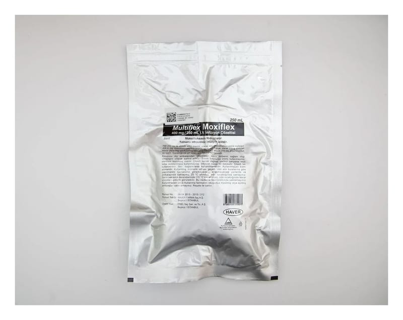

Multiflex Moxiflex 400 mg/250 ml I.V. İnfüzyon Çözeltisi

Ne için kullanılır
KT · Bölüm 1• MOXİFLEX infüzyon çözeltisi, toplardamar içine damla damla enjekte edilmeye (infüzyon) hazır çözelti formunda kullanıma sunulmuştur. Her bir ilaç torbası içinde 400 mg etkin madde (moksifloksasin) bulunmaktadır.
• MOXİFLEX’in etkin maddesi olan moksifloksasin, florokinolon grubu bir antibiyotiktir. Enfeksiyonlara neden olan değişik türlerdeki bakterileri öldürerek etkisini gösterir.
• MOXİFLEX, 250 mililitrelik polipropilen torbalar (Multiflex) içinde kullanıma sunulmaktadır.
• MOXİFLEX, duyarlı mikroorganizmaların (mikroplar) neden olduğu aşağıdaki enfeksiyon hastalıklarının tedavisinde kullanılmaktadır: - Hastane dışında oluşmuş akciğer enfeksiyonu (toplumdan edinilmiş pnömoni) - Başka bir tablonun eşlik etmediği (komplike olmayan) deri ve yumuşak doku enfeksiyonları,
• MOXİFLEX’in da dâhil olduğu ilaç grubu (florokinolonlar), kronik bronşitin akut bakteriyel alevlenmesinde (akciğerdeki bronş tüplerinin zarlarının kalıcı iltihaplanması durumunun yeniden şiddetlenmesi) alternatif tedavi seçeneklerinin varlığında ciddi istenmeyen etki riski nedeniyle kullanılmamalıdır.
MOXİFLEX, yalnızca duyarlı bakterilerin yol açtığı kanıtlanmış ya da bu konuda ciddi şüphe bulunan enfeksiyonların tedavisinde kullanılabilir.